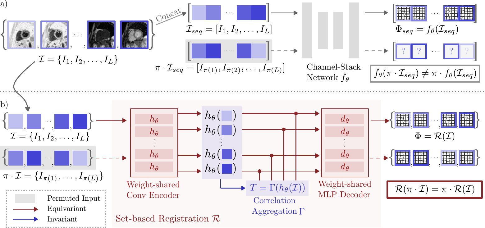
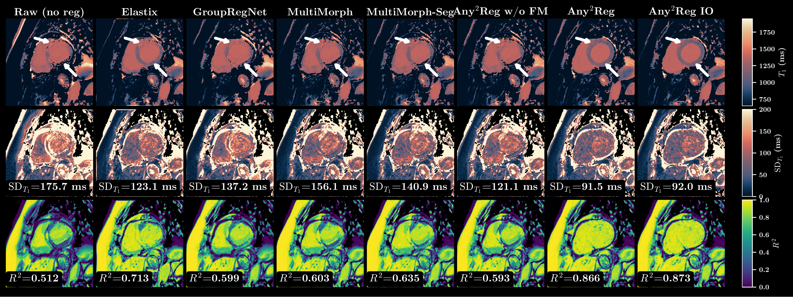
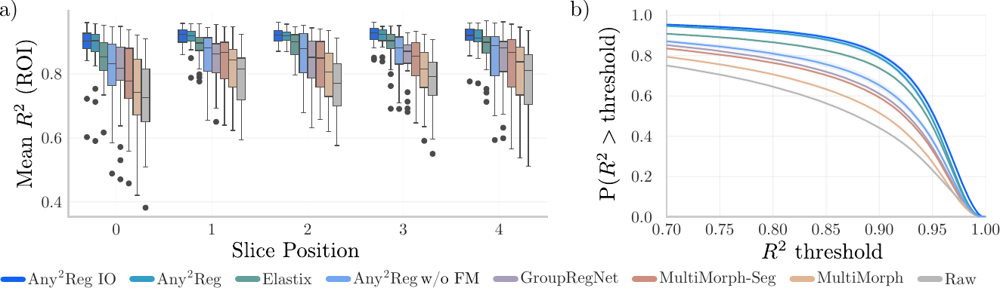
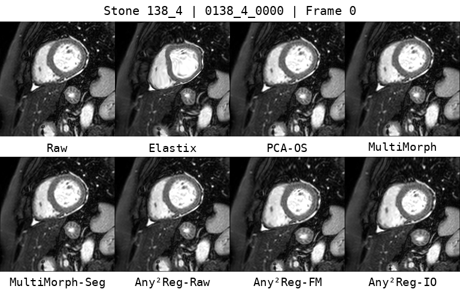

Any2Reg: Set-Based Groupwise Registration for Variable-Length, Variable-Contrast Cardiac MRI
MICCAI 2026 Early Acceptance (Top 9%)
Department of Imaging Physics, Delft University of Technology, the Netherlands
TL;DR
Any2Reg is a set-based groupwise registration framework with cross-protocol generalization: by treating CMR sequences as unordered sets and building a permutation-invariant reference with a shared encoder and correlation-guided aggregation, it is ready to use for a wide range of CMR sequences (STONE, MOLLI, ASL, Cine; L in [11, 60]) with near-linear scalability in deployment.
Abstract
Cardiac MRI protocols present substantial heterogeneity in sequence length and contrast mechanisms, which challenges conventional groupwise registration models based on fixed channel stacking. We introduce a set-based groupwise registration formulation that decouples sequence order from feature extraction and constructs a canonical reference representation shared across frames. This design yields permutation-equivariant registration behavior and supports arbitrary-length input sequences without architecture changes. Across representative cardiac MRI datasets, our approach demonstrates improved registration quality and more reliable downstream mapping metrics in both qualitative and quantitative evaluations.
Method Overview

Set-based Any2Reg pipeline: shared feature encoding, correlation-guided aggregation, permutation-invariant reference construction, and equivariant deformation mapping. View source figure (PDF).
Qualitative Result

Head-to-head qualitative comparison on case 0138_4_0000. Any2Reg and Any2Reg-IO yield cleaner T1 maps, lower uncertainty, and higher fitting quality in regions with large motion. View source figure (PDF).

Slice-wise quantitative evidence on STONE (LV+Myo): Any2Reg-IO consistently improves mean R2 from base to apex, with stronger survival behavior across thresholds. View source figure (PDF).
Animation

STONE. Multi-method temporal registration comparison (Raw, Elastix, GroupRegNet, MultiMorph, MultiMorph-Seg, Any2Reg w/o FM, Any2Reg, Any2Reg-IO).

ACDC. Cross-protocol generalization example with the same comparison protocol and ranking trend as STONE.
Availability
Code and pretrained checkpoints are available in this repository.
BibTeX
@inproceedings{zhang2026any2regnet,
title = {Set-Based Groupwise Registration for Variable-Length, Variable-Contrast Cardiac MRI},
author = {Zhang, Yi and Zhao, Yidong and Toxopeus, Tijmen and Bozic-Iven, Masa and Weingartner, Sebastian and Tao, Qian},
booktitle = {Medical Image Computing and Computer Assisted Intervention (MICCAI)},
year = {2026}
}